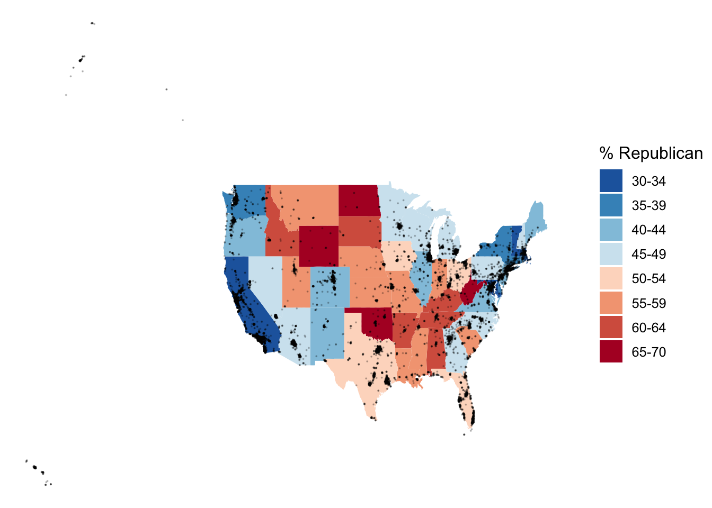

Use this file for practice with the spatial viz in-class activity. Refer to the class website for details.
# Load tidyverse package for plotting and wranglinglibrary(tidyverse)
── Attaching core tidyverse packages ──────────────────────── tidyverse 2.0.0 ──
✔ dplyr 1.1.4 ✔ readr 2.1.5
✔ forcats 1.0.0 ✔ stringr 1.5.1
✔ ggplot2 3.5.1 ✔ tibble 3.2.1
✔ lubridate 1.9.4 ✔ tidyr 1.3.1
✔ purrr 1.0.2
── Conflicts ────────────────────────────────────────── tidyverse_conflicts() ──
✖ dplyr::filter() masks stats::filter()
✖ dplyr::lag() masks stats::lag()
ℹ Use the conflicted package (<http://conflicted.r-lib.org/>) to force all conflicts to become errors
# Import the data and only keep 2 addressesenergy <-read.csv("https://mac-stat.github.io/data/MacNaturalGas.csv") |>mutate(date =as.Date(paste0(month, "/1/", year), "%m/%d/%Y")) |>filter(address !="c")# Check it outhead(energy)
month year price therms hdd address renovated date
1 6 2005 35.21 21 0 a no 2005-06-01
2 7 2005 37.37 21 0 a no 2005-07-01
3 8 2005 36.93 21 3 a no 2005-08-01
4 9 2005 62.36 39 61 a no 2005-09-01
5 10 2005 184.15 120 416 a no 2005-10-01
6 11 2005 433.35 286 845 a no 2005-11-01
ggplot(energy, aes(x = therms)) +geom_histogram()
`stat_bin()` using `bins = 30`. Pick better value with `binwidth`.
Warning: Removed 12 rows containing non-finite outside the scale range
(`stat_bin()`).
ggplot(energy, aes(y = therms, x = date)) +geom_point()
Warning: Removed 12 rows containing missing values or values outside the scale range
(`geom_point()`).
12 Exercise 1
fave_places <-read.csv("https://ajohns24.github.io/data/112/our_fave_places.csv")# Check it outhead(fave_places)
# Load the leaflet packagelibrary(leaflet)# Just a plotting frameleaflet(data = fave_places)
# Now what do we have?- a map of the worldleaflet(data = fave_places) |>addTiles()
# Now what do we have? map with points# longitude and latitude refer to the variables in our dataleaflet(data = fave_places) |>addTiles() |>addMarkers(lng =~longitude, lat =~latitude)
# Since we named them "longitude" and "latitude", the function# automatically recognizes these variables. No need to write them!leaflet(data = fave_places) |>addTiles() |>addMarkers()
13 Exercise 2
# Load package needed to change colorlibrary(gplots)
Attaching package: 'gplots'
The following object is masked from 'package:stats':
lowess
# We can add colored circles instead of markers at each locationleaflet(data = fave_places) |>addTiles() |>addCircles(color =col2hex("red"))
# We can change the background# Mark locations with yellow dots# And connect the dots, in their order in the dataset, with green lines# (These green lines don't mean anything here, but would if this were somebody's travel path!)leaflet(data = fave_places) |>addProviderTiles("USGS") |>addCircles(weight =10, opacity =1, color =col2hex("yellow")) |>addPolylines(lng =~longitude,lat =~latitude,color =col2hex("green") )
Assuming "Longitude" and "Latitude" are longitude and latitude, respectively
ggplot(starbucks, aes(x = Longitude, y = Latitude)) +geom_point(alpla =0.2)
Warning in geom_point(alpla = 0.2): Ignoring unknown parameters: `alpla`
Warning: Removed 1 row containing missing values or values outside the scale range
(`geom_point()`).
15 Exercise 4
# Load the packagelibrary(rnaturalearth)# Get info about country boundaries across the world# in a "sf" or simple feature formatworld_boundaries <-ne_countries(returnclass ="sf")
# What does this code produce?# What geom are we using for the point map?ggplot(world_boundaries) +geom_sf()
# Load package needed to change map themelibrary(mosaic)
Registered S3 method overwritten by 'mosaic':
method from
fortify.SpatialPolygonsDataFrame ggplot2
The 'mosaic' package masks several functions from core packages in order to add
additional features. The original behavior of these functions should not be affected by this.
Attaching package: 'mosaic'
The following object is masked from 'package:Matrix':
mean
The following objects are masked from 'package:dplyr':
count, do, tally
The following object is masked from 'package:purrr':
cross
The following object is masked from 'package:ggplot2':
stat
The following objects are masked from 'package:stats':
binom.test, cor, cor.test, cov, fivenum, IQR, median, prop.test,
quantile, sd, t.test, var
The following objects are masked from 'package:base':
max, mean, min, prod, range, sample, sum
# Add a point for each Starbucks# NOTE: The Starbucks info is in our starbucks data, not world_boundaries# How does this change how we use geom_point?!ggplot(world_boundaries) +geom_sf() +geom_point(data = starbucks,aes(x = Longitude, y = Latitude),alpha =0.3, size =0.2, color ="darkgreen" ) +theme_map()
Warning: Removed 1 row containing missing values or values outside the scale range
(`geom_point()`).
Starbucks is mosly in the US and Western Europe with locations in east aisa as well. There are fewer in south america and africa.
16 Exercise 5
# We'll learn this syntax soon! Don't worry about it now.starbucks_cma <- starbucks |>filter(Country %in%c('CA', 'MX', 'US'))
cma_boundaries <-ne_states(country =c("canada", "mexico", "united states of america"),returnclass ="sf")
# Just the boundariesggplot(cma_boundaries) +geom_sf()
# Add the points# And zoom inggplot(cma_boundaries) +geom_sf() +geom_point(data = starbucks_cma,aes(x = Longitude, y = Latitude),alpha =0.3,size =0.2,color ="darkgreen" ) +coord_sf(xlim =c(-179.14, -50)) +theme_map()
Linking to GEOS 3.13.0, GDAL 3.8.5, PROJ 9.5.1; sf_use_s2() is TRUE
library(maps)
Attaching package: 'maps'
The following object is masked from 'package:purrr':
map
# Get the boundariesmidwest_boundaries <-st_as_sf( maps::map("county",region =c("minnesota", "wisconsin", "north dakota", "south dakota"), fill =TRUE, plot =FALSE))# Check it outhead(midwest_boundaries)
Simple feature collection with 6 features and 1 field
Geometry type: MULTIPOLYGON
Dimension: XY
Bounding box: xmin: -96.81268 ymin: 45.05167 xmax: -93.01397 ymax: 48.53526
Geodetic CRS: +proj=longlat +ellps=clrk66 +no_defs +type=crs
ID geom
minnesota,aitkin minnesota,aitkin MULTIPOLYGON (((-93.03689 4...
minnesota,anoka minnesota,anoka MULTIPOLYGON (((-93.51817 4...
minnesota,becker minnesota,becker MULTIPOLYGON (((-95.14537 4...
minnesota,beltrami minnesota,beltrami MULTIPOLYGON (((-95.58655 4...
minnesota,benton minnesota,benton MULTIPOLYGON (((-93.77027 4...
minnesota,big stone minnesota,big stone MULTIPOLYGON (((-96.10794 4...
ggplot(midwest_boundaries) +geom_sf() +geom_point(data = starbucks_midwest,aes(x = Longitude, y = Latitude),alpha =0.7,size =0.2, color ='darkgreen' ) +theme_map()
#Exercise 7
# Point map (we made this earlier)ggplot(cma_boundaries) +geom_sf() +geom_point(data = starbucks_cma,aes(x = Longitude, y = Latitude),alpha =0.3,size =0.2,color ="darkgreen" ) +coord_sf(xlim =c(-179.14, -50), ylim =c(14.54, 83.11)) +theme_map()
# What changed in the plot?# What changed in our code?!ggplot(cma_boundaries) +geom_sf() +geom_density_2d(data = starbucks_cma,aes(x = Longitude, y = Latitude),size =0.2,color ="darkgreen" ) +coord_sf(xlim =c(-179.14, -50), ylim =c(14.54, 83.11)) +theme_map()
Warning: Using `size` aesthetic for lines was deprecated in ggplot2 3.4.0.
ℹ Please use `linewidth` instead.
# Get the latitude and longitude coordinates of state boundariesstates_map <-map_data("state")# Check it outhead(states_map)
long lat group order region subregion
1 -87.46201 30.38968 1 1 alabama <NA>
2 -87.48493 30.37249 1 2 alabama <NA>
3 -87.52503 30.37249 1 3 alabama <NA>
4 -87.53076 30.33239 1 4 alabama <NA>
5 -87.57087 30.32665 1 5 alabama <NA>
6 -87.58806 30.32665 1 6 alabama <NA>
# Note where the dataset, elections_by_state, is used# Note where the background map, states_map, is usedggplot(elections_by_state, aes(map_id = state_name, fill = repub_pct_20)) +geom_map(map = states_map) +expand_limits(x = states_map$long, y = states_map$lat) +theme_map()
# Make it nicer!ggplot(elections_by_state, aes(map_id = state_name, fill = repub_pct_20)) +geom_map(map = states_map) +expand_limits(x = states_map$long, y = states_map$lat) +theme_map() +scale_fill_gradientn(name ="% Republican", colors =c("blue", "purple", "red"), values = scales::rescale(seq(0, 100, by =5)))
ggplot(elections_by_state, aes(map_id = state_name, fill = repub_20_categories)) +geom_map(map = states_map) +expand_limits(x = states_map$long, y = states_map$lat) +theme_map()
# Load package needed for refining color palettelibrary(RColorBrewer)# Now fix the colorsggplot(elections_by_state, aes(map_id = state_name, fill = repub_20_categories)) +geom_map(map = states_map) +expand_limits(x = states_map$long, y = states_map$lat) +theme_map() +scale_fill_manual(values =rev(brewer.pal(8, "RdBu")), name ="% Republican")
# Get only the starbucks data from the USstarbucks_us <- starbucks |>filter(Country =="US")# Map itggplot(elections_by_state, aes(map_id = state_name, fill = repub_20_categories)) +geom_map(map = states_map) +geom_point(data = starbucks_us,aes(x = Longitude, y = Latitude),size =0.05,alpha =0.2,inherit.aes =FALSE ) +expand_limits(x = states_map$long, y = states_map$lat) +theme_map() +scale_fill_manual(values =rev(brewer.pal(8, "RdBu")), name ="% Republican")

Exercise 9
# Get the latitude and longitude coordinates of county boundarieslibrary(socviz)data(county_map) # Check it outhead(county_map)
# Add 0's at the beginning of any fips_code that's fewer than 5 numbers long# Don't worry about the syntaxelections_by_counties <- elections_by_counties |>mutate(county_fips =as.character(county_fips)) |>mutate(county_fips =ifelse(nchar(county_fips) ==4, paste0("0", county_fips), county_fips))
ggplot(elections_by_counties, aes(map_id = county_fips, fill = repub_20_categories)) +geom_map(map = county_map) +scale_fill_manual(values =rev(brewer.pal(10, "RdBu")), name ="% Republican") +expand_limits(x = county_map$long, y = county_map$lat) +theme_map() +theme(legend.position ="right") +coord_equal()
18 Exercise 10
ggplot(elections_by_counties, aes(map_id = county_fips, fill = median_age)) +geom_map(map = county_map) +expand_limits(x = county_map$long, y = county_map$lat) +theme_map() +theme(legend.position ="right") +coord_equal()
ggplot(elections_by_counties, aes(map_id = county_fips, fill = median_rent)) +geom_map(map = county_map) +expand_limits(x = county_map$long, y = county_map$lat) +theme_map() +theme(legend.position ="right") +coord_equal()
Source Code
---title: "Spatial Viz"---Use this file for practice with the **spatial viz** in-class activity. Refer to the class website for details.```{r}# Load tidyverse package for plotting and wranglinglibrary(tidyverse)# Import the data and only keep 2 addressesenergy <-read.csv("https://mac-stat.github.io/data/MacNaturalGas.csv") |>mutate(date =as.Date(paste0(month, "/1/", year), "%m/%d/%Y")) |>filter(address !="c")# Check it outhead(energy)``````{r}ggplot(energy, aes(x = therms)) +geom_histogram()``````{r}ggplot(energy, aes(y = therms, x = date)) +geom_point()```# Exercise 1```{r}fave_places <-read.csv("https://ajohns24.github.io/data/112/our_fave_places.csv")# Check it outhead(fave_places)``````{r}# Load the leaflet packagelibrary(leaflet)# Just a plotting frameleaflet(data = fave_places)``````{r}# Now what do we have?- a map of the worldleaflet(data = fave_places) |>addTiles()``````{r}# Now what do we have? map with points# longitude and latitude refer to the variables in our dataleaflet(data = fave_places) |>addTiles() |>addMarkers(lng =~longitude, lat =~latitude)``````{r}# Since we named them "longitude" and "latitude", the function# automatically recognizes these variables. No need to write them!leaflet(data = fave_places) |>addTiles() |>addMarkers()```# Exercise 2```{r}# Load package needed to change colorlibrary(gplots)# We can add colored circles instead of markers at each locationleaflet(data = fave_places) |>addTiles() |>addCircles(color =col2hex("red"))``````{r}# We can change the background# Mark locations with yellow dots# And connect the dots, in their order in the dataset, with green lines# (These green lines don't mean anything here, but would if this were somebody's travel path!)leaflet(data = fave_places) |>addProviderTiles("USGS") |>addCircles(weight =10, opacity =1, color =col2hex("yellow")) |>addPolylines(lng =~longitude,lat =~latitude,color =col2hex("green") )```# Exercise 3```{r}# Import starbucks location datastarbucks <-read.csv("https://mac-stat.github.io/data/starbucks.csv")``````{r}# Don't worry about the syntaxstarbucks_mn <- starbucks |>filter(Country =="US", State.Province =="MN")``````{r}leaflet(data = starbucks_mn) |>addTiles() |>addMarkers()``````{r}ggplot(starbucks, aes(x = Longitude, y = Latitude)) +geom_point(alpla =0.2) ```# Exercise 4```{r}# Load the packagelibrary(rnaturalearth)# Get info about country boundaries across the world# in a "sf" or simple feature formatworld_boundaries <-ne_countries(returnclass ="sf")``````{r}# What does this code produce?# What geom are we using for the point map?ggplot(world_boundaries) +geom_sf()``````{r}# Load package needed to change map themelibrary(mosaic)# Add a point for each Starbucks# NOTE: The Starbucks info is in our starbucks data, not world_boundaries# How does this change how we use geom_point?!ggplot(world_boundaries) +geom_sf() +geom_point(data = starbucks,aes(x = Longitude, y = Latitude),alpha =0.3, size =0.2, color ="darkgreen" ) +theme_map()```Starbucks is mosly in the US and Western Europe with locations in east aisa as well. There are fewer in south america and africa.# Exercise 5```{r}# We'll learn this syntax soon! Don't worry about it now.starbucks_cma <- starbucks |>filter(Country %in%c('CA', 'MX', 'US'))``````{r}cma_boundaries <-ne_states(country =c("canada", "mexico", "united states of america"),returnclass ="sf")``````{r}# Just the boundariesggplot(cma_boundaries) +geom_sf()``````{r}# Add the points# And zoom inggplot(cma_boundaries) +geom_sf() +geom_point(data = starbucks_cma,aes(x = Longitude, y = Latitude),alpha =0.3,size =0.2,color ="darkgreen" ) +coord_sf(xlim =c(-179.14, -50)) +theme_map()```# Exercise 6```{r}starbucks_midwest <- starbucks |>filter(State.Province %in%c("MN", "ND", "SD", "WI"))``````{r}# Load packageslibrary(sf)library(maps)# Get the boundariesmidwest_boundaries <-st_as_sf( maps::map("county",region =c("minnesota", "wisconsin", "north dakota", "south dakota"), fill =TRUE, plot =FALSE))# Check it outhead(midwest_boundaries)``````{r}ggplot(midwest_boundaries) +geom_sf() +geom_point(data = starbucks_midwest,aes(x = Longitude, y = Latitude),alpha =0.7,size =0.2, color ='darkgreen' ) +theme_map()```#Exercise 7```{r}# Point map (we made this earlier)ggplot(cma_boundaries) +geom_sf() +geom_point(data = starbucks_cma,aes(x = Longitude, y = Latitude),alpha =0.3,size =0.2,color ="darkgreen" ) +coord_sf(xlim =c(-179.14, -50), ylim =c(14.54, 83.11)) +theme_map()``````{r}# What changed in the plot?# What changed in our code?!ggplot(cma_boundaries) +geom_sf() +geom_density_2d(data = starbucks_cma,aes(x = Longitude, y = Latitude),size =0.2,color ="darkgreen" ) +coord_sf(xlim =c(-179.14, -50), ylim =c(14.54, 83.11)) +theme_map()``````{r}elections_by_state <-read.csv("https://mac-stat.github.io/data/election_2020_by_state.csv")elections_by_counties <-read.csv("https://mac-stat.github.io/data/election_2020_county.csv")``````{r}# Don't worry about the code!elections_by_state <- elections_by_state |>filter(state_abbr !="DC") |>select(state_name, state_abbr, repub_pct_20) |>mutate(repub_20_categories =cut(repub_pct_20, breaks =seq(30, 70, by =5), labels =c("30-34", "35-39", "40-44", "45-49","50-54", "55-59", "60-64", "65-70"), include.lowest =TRUE))elections_by_counties <- elections_by_counties |>select(state_name, state_abbr, county_name, county_fips, repub_pct_20, median_age, median_rent) |>mutate(repub_20_categories =cut(repub_pct_20, breaks =seq(0, 100, by =10),labels =c("0-9", "10-19", "20-29", "30-39", "40-49","50-59", "60-69", "70-79", "80-89", "90-100"),include.lowest =TRUE))```#Exercise 8```{r}# Get the latitude and longitude coordinates of state boundariesstates_map <-map_data("state")# Check it outhead(states_map)``````{r}# Note where the dataset, elections_by_state, is used# Note where the background map, states_map, is usedggplot(elections_by_state, aes(map_id = state_name, fill = repub_pct_20)) +geom_map(map = states_map) +expand_limits(x = states_map$long, y = states_map$lat) +theme_map() ``````{r}# Make it nicer!ggplot(elections_by_state, aes(map_id = state_name, fill = repub_pct_20)) +geom_map(map = states_map) +expand_limits(x = states_map$long, y = states_map$lat) +theme_map() +scale_fill_gradientn(name ="% Republican", colors =c("blue", "purple", "red"), values = scales::rescale(seq(0, 100, by =5)))``````{r}ggplot(elections_by_state, aes(map_id = state_name, fill = repub_20_categories)) +geom_map(map = states_map) +expand_limits(x = states_map$long, y = states_map$lat) +theme_map()``````{r}# Load package needed for refining color palettelibrary(RColorBrewer)# Now fix the colorsggplot(elections_by_state, aes(map_id = state_name, fill = repub_20_categories)) +geom_map(map = states_map) +expand_limits(x = states_map$long, y = states_map$lat) +theme_map() +scale_fill_manual(values =rev(brewer.pal(8, "RdBu")), name ="% Republican")``````{r}# Get only the starbucks data from the USstarbucks_us <- starbucks |>filter(Country =="US")# Map itggplot(elections_by_state, aes(map_id = state_name, fill = repub_20_categories)) +geom_map(map = states_map) +geom_point(data = starbucks_us,aes(x = Longitude, y = Latitude),size =0.05,alpha =0.2,inherit.aes =FALSE ) +expand_limits(x = states_map$long, y = states_map$lat) +theme_map() +scale_fill_manual(values =rev(brewer.pal(8, "RdBu")), name ="% Republican")```#. Exercise 9```{r}# Get the latitude and longitude coordinates of county boundarieslibrary(socviz)data(county_map) # Check it outhead(county_map)``````{r}# Add 0's at the beginning of any fips_code that's fewer than 5 numbers long# Don't worry about the syntaxelections_by_counties <- elections_by_counties |>mutate(county_fips =as.character(county_fips)) |>mutate(county_fips =ifelse(nchar(county_fips) ==4, paste0("0", county_fips), county_fips))``````{r}ggplot(elections_by_counties, aes(map_id = county_fips, fill = repub_20_categories)) +geom_map(map = county_map) +scale_fill_manual(values =rev(brewer.pal(10, "RdBu")), name ="% Republican") +expand_limits(x = county_map$long, y = county_map$lat) +theme_map() +theme(legend.position ="right") +coord_equal()```# Exercise 10```{r}ggplot(elections_by_counties, aes(map_id = county_fips, fill = median_age)) +geom_map(map = county_map) +expand_limits(x = county_map$long, y = county_map$lat) +theme_map() +theme(legend.position ="right") +coord_equal()``````{r}ggplot(elections_by_counties, aes(map_id = county_fips, fill = median_rent)) +geom_map(map = county_map) +expand_limits(x = county_map$long, y = county_map$lat) +theme_map() +theme(legend.position ="right") +coord_equal()```